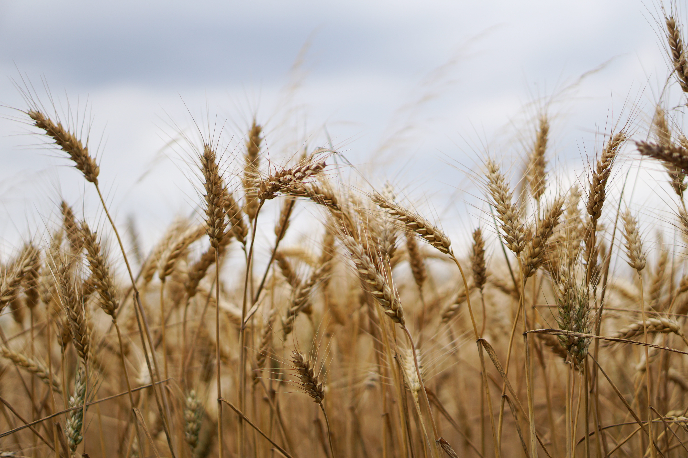

कृषि एवं इससे संबद्ध क्षेत्र भारत की अधिकांश जनसंख्या, खासकर ग्रामीण क्षेत्रों के लोगों, के लिए आजीविका का मुख्य साधन है। यह सकल घरेलू उत्पाद (जीडीपी) के निर्धारण में भी महत्वपूर्ण योगदान देता है। इस खंड में कृषि फसलों को कैसे प्रभावी ढंग से विकसित करे इत्यादि के बारे जानकारी प्रदान की गई है |
फसलों की जानकारी
चावल
चावल की खेती के लिए तापमान 20०C से 30०C तथा वर्षा 75 से॰मी॰ से अधिक होनी चाहिए ।जिन प्रदेशों में वर्षा की कमी है वहाँ सिंचाई की सहायता से चावल की खेती की जाती है, जैसे पंजाब हरियाणा एवं राजस्थान में । चावल की खेती के लिए चिकनी मिट्टी की आवश्यकता होती है जिसमें पानी ठहरा रहे ।चावल की सफल खेती के लिए मिट्टी की PH 5 से 8 की सीमा के अंतर्गत होनी चाहिए ।

गेंहू
गेहूं के बीज अंकुरण के लिए 20 से 25°C तापमान उचित रहता है| गेहूं की बढवार के लिए 27°C से अधिक तापमान होने पर विपरीत प्रभाव होता है | क्योंकि तापमान अधिक होने से उत्स्वेदन प्रक्रिया द्वारा अधिक उर्जा की क्षति होती है तथा बढवार कम रह जाती है| फूल आने के समय कम तथा अधिक तापमान हानिकारक होता है| जहां पर एक मीटर तक कठोर पड़त हो, वहां गेहूं की खेती नहीं करनी चाहिए|
मक्का
मक्का को खरीफ की फसल कहा जाता है, लेकिन बहुत से क्षेत्रों में इसको रवि के समय भी उगाया जाता है| इसके गुणकारी होने के कारण पहले की तुलना में आज के समय इसका उपयोग मानव आहर के रूप में ज्यादा होता है| इसमें कार्बोहाइड्रेट 70, प्रोटीन 10 प्रतिशत पाया जाता है| मक्का की खेती विभिन्न प्रकार की जलवायु में की जा सकती है, परन्तु उष्ण क्षेत्रों में मक्का की वृद्धि, विकास एवं उपज अधिक पाई जाती है|
जौ
जौ की खेती के लिए समशीतोष्ण जलवायु की आवश्यकता होती है| इसकी खेती के लिए अनुकूल तापमान बुवाई के समय 25 से 30 डिग्री सेंटीग्रेट उपयुक्त माना जाता है| इसकी खेती मुख्यतया असिंचित स्थानों पर अधिकतर की जाती है| जौ की खेती अनेक प्रकार की भूमियों जैसे बलुई, बलुई दोमट या दोमट भूमि में की जा सकती है| लेकिन दोमट भूमि जौ की खेती के लिए सर्वोत्तम होती है|
सोयाबीन
सोयाबीन खरीफ की फसल है| सोयाबीन जिव पोषण और स्वास्थ्य के लिए उपयोगी खाद्य पदार्थ है, जिसके अंदर कार्बोहाइड्रेट 21%, वसा 22%, प्रोटीन 33% और 12% नमी होती है| सोयाबीन की सफल खेती के लिए उपजाऊ, अच्छे जल निकासी वाली, नमकरहित, मध्यम से भारी दोमट मिट्टी की आवश्यकता होती है| सोयाबीन की अच्छी वृद्धि तथा उपज के लिए गर्म और नम जलवायु की आवश्यकता होती है|
मूंगफली
मूंगफली की खेती विभिन्न प्रकार की मिट्टियों में की जा सकती है फिर भी इसकी अच्छी तैयारी के लिए जल निकास वाली कैल्शियम एवं जैव पदार्थो से युक्त बलुई दोमट मिट्टी उत्तम होती है| मूंगफली की गुच्छेदार प्रजातियों का 100 कि.ग्रा. एवं फैलने व अर्द्ध फैलने वाली प्रजातियों का 80 कि.ग्रा. बीज (दाने) प्रति हैक्टर प्रयोग उत्तम पाया गया है| मिट्टी का pH 6.0 से 8.0 उपयुक्त रहता है|
एकीकृत कृषि प्रणाली
एकीकृत कृषि प्रणाली, खेती की एक ऐसी पद्वति है जिसके तहत किसान अपने खेत से सम्बंधित उपलब्ध सभी संसाधनों का इस्तेमाल करके कृषि से अधिक से अधिक लाभ प्राप्त करता है। कृषि के इस विधि से छोटे किसानों की अपनी घरेलू आवश्यकताओं की पूर्ति के साथ कृषि से अत्यधिक लाभ प्राप्त होता है वहीं दूसरी ओर फसल उत्पादन और अवशेषों की रीसाइकलिंग के द्वारा टिकाऊ फसल उत्पादन में मदद मिलती है। इस विधि के तहत मुख्य फसलों के साथ दूसरी खेती आधारित छोटे उद्योग, पशुपालन, मछली पालन एवं बागवानी जैसे कार्यों को किया जाता है।
बार बार पूछे जाने वाले प्रश्न
प्र.क्र.1 विभिन्न सब्सिडी योजनाओं के तहत विभाग द्वारा शामिल की गई फसलें कौन कौन सी हैं?
उत्तर) धान, गन्ना, मूंगफली और बाजरा |
प्र.क्र.2 विभाग द्वारा संचालित योजना का लाभ लेने के लिये कौन कौन योग्य हैं?
उत्तर) लाभार्थी पुडुचेरी के केंद्र शासित प्रदेश से संबंधित किसानों का अभ्यास करेंगे।
प्र.क्र.3 क्या किसी किसान को बुआई से पहले उसके बीज का परीक्षण करने की कोई सुविधा है?
उत्तर) हां, कृषि और किसान कल्याण निदेशालय, पुदुचेरी में बीज परीक्षण प्रयोगशाला की सुविधा मुफ्त में उपलब्ध करा सकता है।
प्र.क्र.4 उर्वरक डीलर लाइसेंस प्राप्त करने के लिए किससे संपर्क किया जाना चाहिए
उत्तर) कृषि और किसान कल्याण निदेशालय, में कृषि अधिकारी (उर्वरक)।
प्र.क्र.5 खरीफ की फसलें कब बोई जाती है और कब काटी जाती है ?
उत्तर) खरीफ की फसलें जून जुलाई में बोई जाती हैं तथा सितम्बर अक्टूबर में इनकी कटाई होती है |
प्र.क्र.6 सामान्य फसले उगाने के लिए उर्वर भूमि का PH मान क्या है ?
उत्तर) 6 से 7|
यदि आपके प्रश्न का उल्लेख यहां नहीं किया गया है, तो कृपया दिए गए बॉक्स में अपना प्रश्न लिखें |